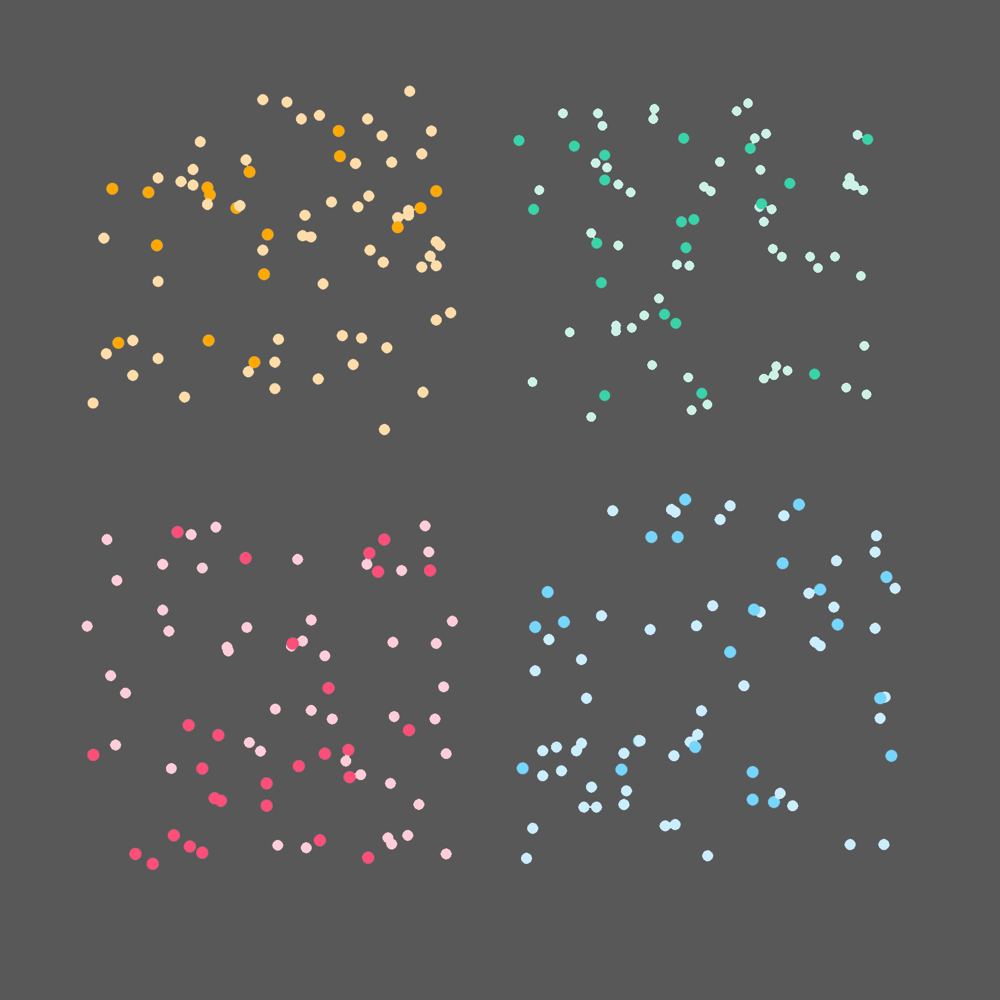

- Digital
- These four images were produced running a Python script that draws 75 random dots, with the chance of the darker color 26% and the chance of the lighter color 74%
 - Co-developed programming language Smalltalk and wrote much of the documentation
- Co-developed programming language Smalltalk and wrote much of the documentation
- Her concepts became the basis for graphic interfaces, replacing previously used command line interfaces
- https://www.computerhope.com/people/adele_goldberg.htm